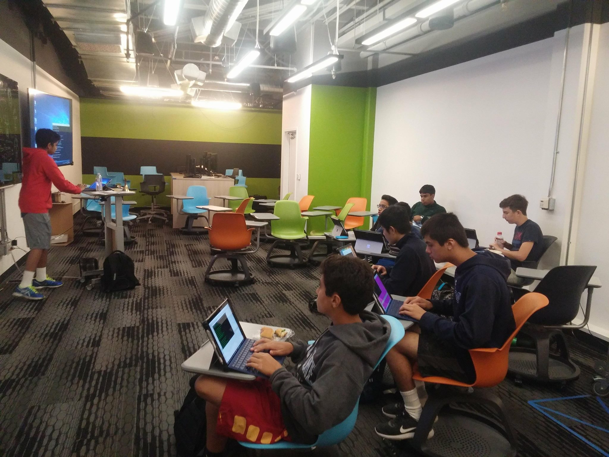
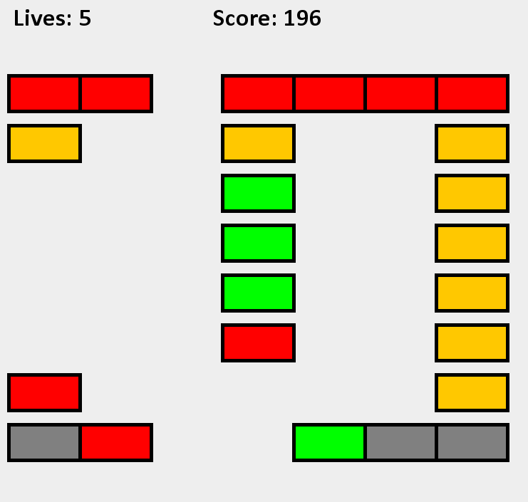
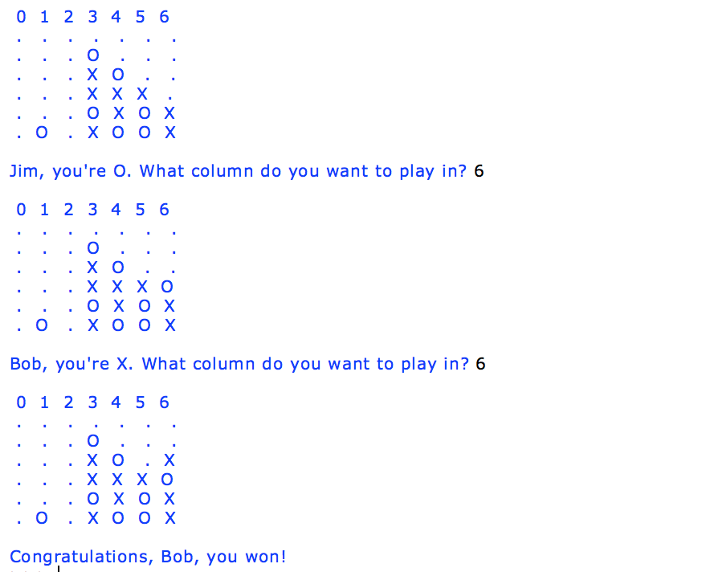

Experience

Computational Research Intern
Conducted distributed computing research under Professor Arijit Das. Created a Java MapReduce algorithm compatible with a Hadoop Distributed File System (HDFS) to parallel process binary event log data. Software helps U.S. Navy identify network anomalies and pinpoint cybersecurity threats to the Naval network. Research is published in CHIPS, the U.S. Navy's information technology magazine. Link to article.

Software Development Intern
Developed a software application in Java for Z wave technology that monitors data measurements retrieved from sensors onboard the Qolsys IQ Panel 2. Created a software tool that analyzes Tx Linearizer (transmission power in dBm) and LNA Offset (low-noise electronic amplifier) measurements of 6 LTE bands to ensure radio devices complied with industry standards.

Code Alliance Mobile Developer
Building an Android mobile application in Java/XML to function as a platform for chefs to host interactive online culinary classes. Integrating the application with DigitalOcean and AWS for user authentication and data storage. Utilizing the TokBox API to support video streaming and live chat features.

Website Analytics Intern
Analyzed usage of Bookshare.org, an accessible online library for people with print disabilities with 400K+ users. Enhanced internal database by replacing outdated EPUB files and updating title metadata. Gathered and interpreted website analytics data to improve UI/UX. Leveraged usage data to demonstrate website shortcomings in a corporate meeting including the CEO of Benetech.

Programming Club President
Manage a space that fosters interest in computer science and equips students with tools to create software. Host development workshops and tutorials, where I coach students in programming languages and algorithms (Java, Python, JavaScript, etc.) by guiding members through the entire process of building applications, from concept to completion. Feel free to check our website for more details on our club projects.
Projects

Grub Club
Grub Club is an iOS application built in Swift that employs geolocation and artificial intelligence to suggest restaurants to eat at with a group of friends. Incorporates Google Places API for location and restaruant data and AI algorithms for restaurant suggestions. Winner at HackMerced2017F (National Collegiate Hackathon). Project devpost can be found here.

Brick Breaker
Recreated the Brick Breaker game on Desktop using Java. The objective of the game is to bounce a ball off a paddle to destroy all the bricks in a map (5 maps total). Implemented the KeyListener interface for streamlined user input controls and the AWT/Swing graphics packages for game animations. Improved game by refining collision detection algorithms and other aspects of the physics engine. Check out the source code.

Blackjack
Created a computer-based version of the popular casino card game Blackjack (21). Program simulates a casino table, complete with virtual cards and an AI dealer. The game is compatible with any number of players. Employed object oriented programming and inheritance to develop game algorithms. Check out the source code.

Connect 4
Final project for AOPS Intro to Python Programming 2015. Developed a 2-player desktop version of Connect 4 in Python. Implemented a 2D array to simulate the game board and several methods to scan for a win condition across the horizontal, vertical and diagonal axes. Debugged and fixed errors found by corner-case testing. Check out the source code.